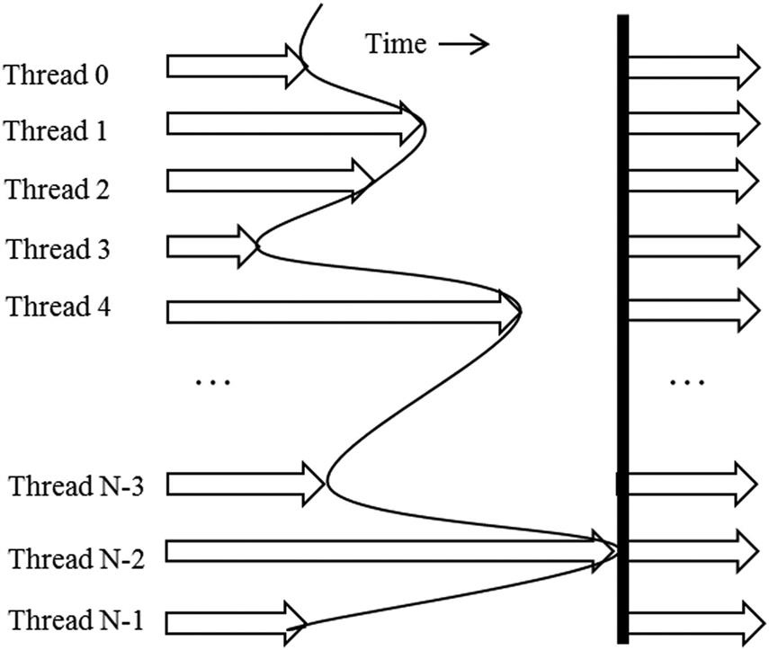
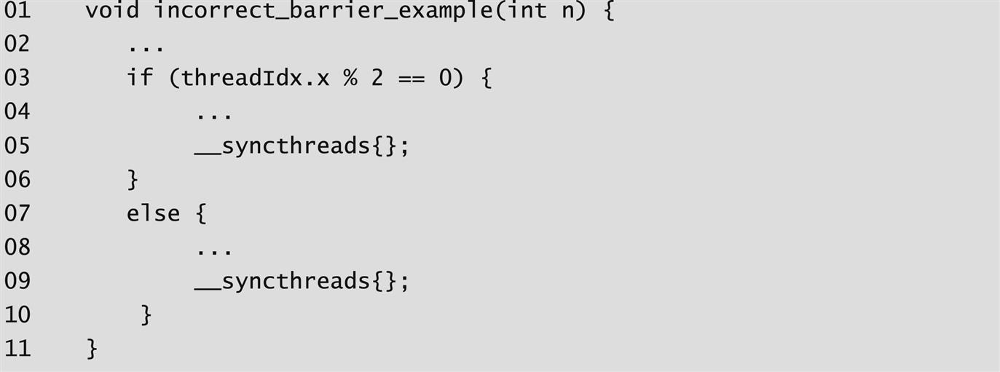
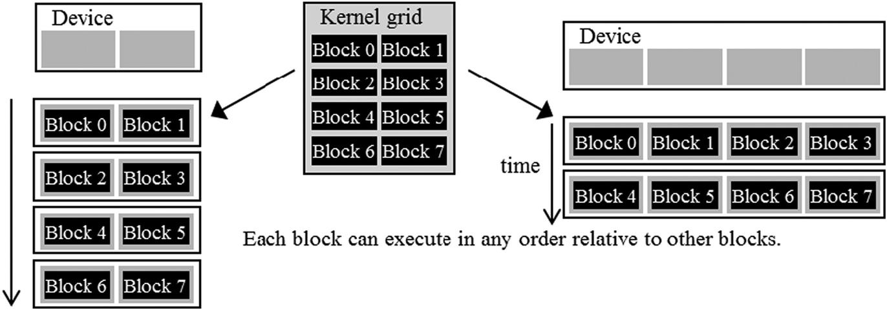
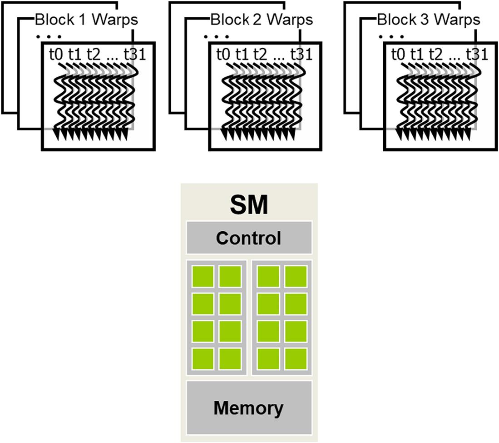
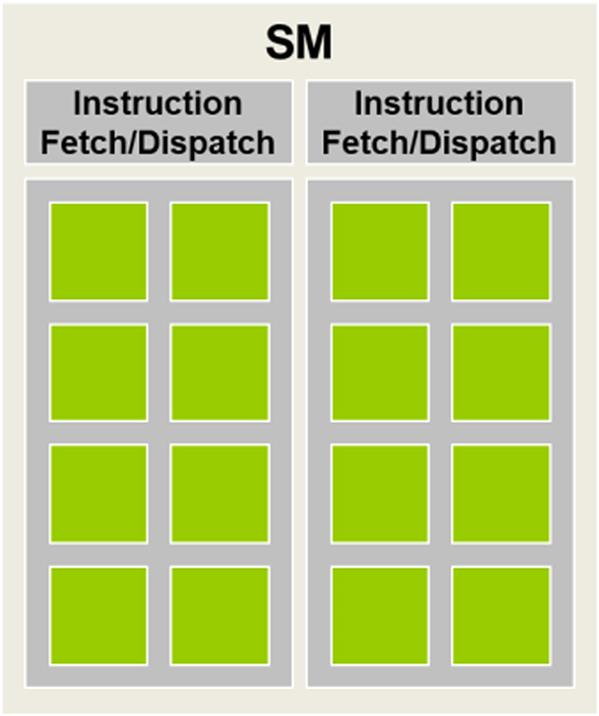
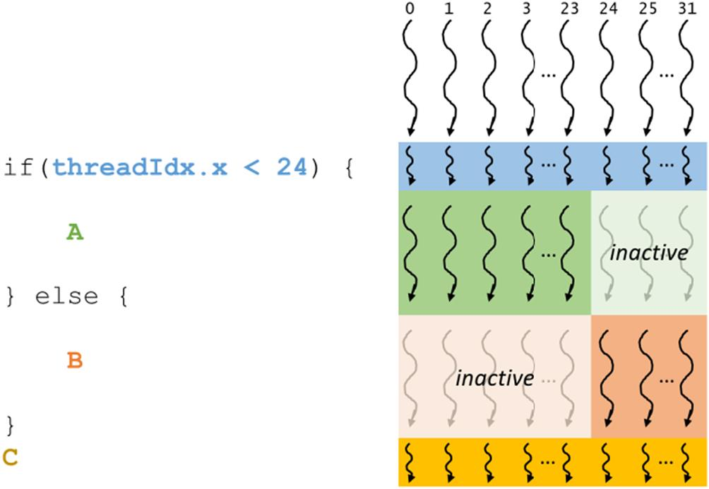
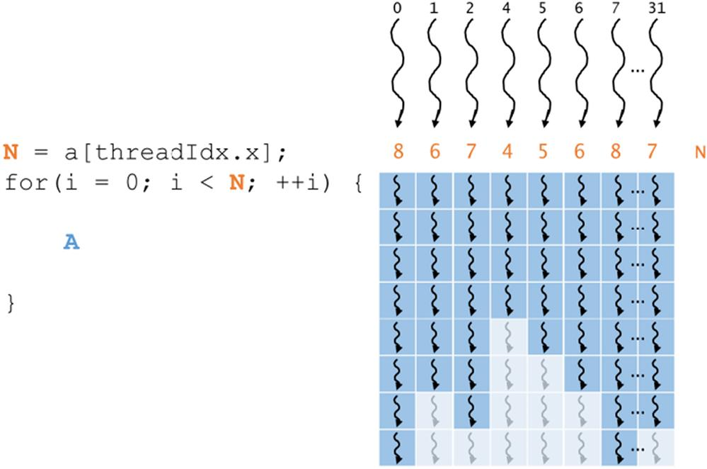
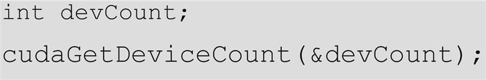
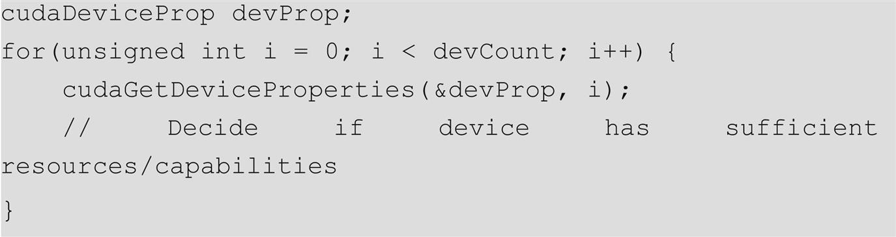
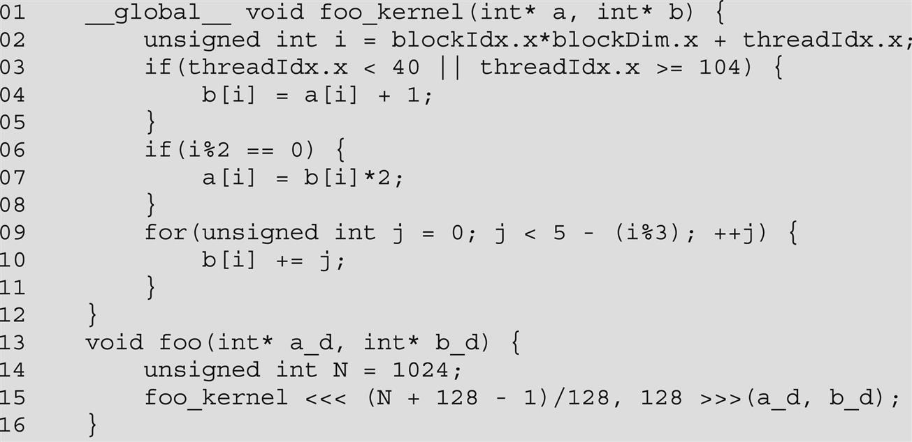

This chapter introduces key concepts in the compute architectures of modern GPUs that are important to CUDA C programmers. It first gives an overview of the GPU execution resources, such as streaming multiprocessors (SMs). It then discusses how the blocks are assigned to SMs and divided into warps for scheduling purposes. It then gives more details about single-instruction, multiple-data execution hardware, warp scheduling, latency tolerance, control divergence, and effects of resource limitations. The chapter concludes with an introduction to the concept of resource queries.
Thread scheduling; warp scheduling; linear layout of threads; control divergence; dynamic resource partitioning; streaming multiprocessors; occupancy; transparent scalability; device property query; barrier synchronization; latency tolerance; zero-overhead thread scheduling; deadlock
In Chapter 1, Introduction, we saw that CPUs are designed to minimize the latency of instruction execution and that GPUs are designed to maximize the throughput of executing instructions. In Chapters 2, Heterogeneous Data Parallel Computing and 3, Multidimensional Grids and Data, we learned the core features of the CUDA programming interface for creating and calling kernels to launch and execute threads. In the next three chapters we will discuss the architecture of modern GPUs, both the compute architecture and the memory architecture, and the performance optimization techniques stemming from the understanding of this architecture. This chapter presents several aspects of the GPU compute architecture that are essential for CUDA C programmers to understand and reason about the performance behavior of their kernel code. We will start by showing a high-level, simplified view of the compute architecture and explore the concepts of flexible resource assignment, scheduling of blocks, and occupancy. We will then advance into thread scheduling, latency tolerance, control divergence, and synchronization. We will finish the chapter with a description of the API functions that can be used to query the resources that are available in the GPU and the tools to help estimate the occupancy of the GPU when executing a kernel. In the following two chapters, we will present the core concepts and programming considerations of the GPU memory architecture. In particular, Chapter 5, Memory Architecture and Data Locality, focuses on the on-chip memory architecture, and Chapter 6, Performance Considerations, briefly covers the off-chip memory architecture then elaborates on various performance considerations of the GPU architecture as a whole. A CUDA C programmer who masters these concepts is well equipped to write and to understand high-performance parallel kernels.
Fig. 4.1 shows a high-level, CUDA C programmer’s view of the architecture of a typical CUDA-capable GPU. It is organized into an array of highly threaded streaming multiprocessors (SMs). Each SM has several processing units called streaming processors or CUDA cores (hereinafter referred to as just cores for brevity), shown as small tiles inside the SMs in Fig. 4.1, that share control logic and memory resources. For example, the Ampere A100 GPU has 108 SMs with 64 cores each, totaling 6912 cores in the entire GPU.
The SMs also come with different on-chip memory structures collectively labeled as “Memory” in Fig. 4.1. These on-chip memory structures will be the topic of Chapter 5, Memory Architecture and Data Locality. GPUs also come with gigabytes of off-chip device memory, referred to as “Global Memory” in Fig. 4.1. While older GPUs used graphics double data rate synchronous DRAM, more recent GPUs starting with NVIDIA’s Pascal architecture may use HBM (high-bandwidth memory) or HBM2, which consist of DRAM (dynamic random access memory) modules tightly integrated with the GPU in the same package. For brevity we will broadly refer to all these types of memory as DRAM for the rest of the book. We will discuss the most important concepts involved in accessing GPU DRAMs in Chapter 6, Performance Considerations.
When a kernel is called, the CUDA runtime system launches a grid of threads that execute the kernel code. These threads are assigned to SMs on a block-by-block basis. That is, all threads in a block are simultaneously assigned to the same SM.
Fig. 4.2 illustrates the assignment of blocks to SMs. Multiple blocks are likely to be simultaneously assigned to the same SM. For example, in Fig. 4.2, three blocks are assigned to each SM. However, blocks need to reserve hardware resources to execute, so only a limited number of blocks can be simultaneously assigned to a given SM. The limit on the number of blocks depends on a variety of factors that are discussed in Section 4.6.
With a limited number of SMs and a limited number of blocks that can be simultaneously assigned to each SM, there is a limit on the total number of blocks that can be simultaneously executing in a CUDA device. Most grids contain many more blocks than this number. To ensure that all blocks in a grid get executed, the runtime system maintains a list of blocks that need to execute and assigns new blocks to SMs when previously assigned blocks complete execution.
The assignment of threads to SMs on a block-by-block basis guarantees that threads in the same block are scheduled simultaneously on the same SM. This guarantee makes it possible for threads in the same block to interact with each other in ways that threads across different blocks cannot.1 This includes barrier synchronization, which is discussed in Section 4.3. It also includes accessing a low-latency shared memory that resides on the SM, which is discussed in Chapter 5, Memory Architecture and Data Locality.
CUDA allows threads in the same block to coordinate their activities using the barrier synchronization function __syncthreads(). Note that “__” consists of two “_” characters. When a thread calls __syncthreads(), it will be held at the program location of the call until every thread in the same block reaches that location. This ensures that all threads in a block have completed a phase of their execution before any of them can move on to the next phase.
Barrier synchronization is a simple and popular method for coordinating parallel activities. In real life, we often use barrier synchronization to coordinate parallel activities of multiple people. For example, assume that four friends go to a shopping mall in a car. They can all go to different stores to shop for their own clothes. This is a parallel activity and is much more efficient than if they all remain as a group and sequentially visit all the stores of interest. However, barrier synchronization is needed before they leave the mall. They must wait until all four friends have returned to the car before they can leave. The ones who finish earlier than the others must wait for those who finish later. Without the barrier synchronization, one or more individuals can be left in the mall when the car leaves, which could seriously damage their friendship!
Fig. 4.3 illustrates the execution of barrier synchronization. There are N threads in the block. Time goes from left to right. Some of the threads reach the barrier synchronization statement early, and some reach it much later. The ones that reach the barrier early will wait for those that arrive late. When the latest one arrives at the barrier, all threads can continue their execution. With barrier synchronization, “no one is left behind.”

In CUDA, if a __syncthreads() statement is present, it must be executed by all threads in a block. When a __syncthreads() statement is placed in an if statement, either all threads in a block execute the path that includes the __syncthreads() or none of them does. For an if-then-else statement, if each path has a __syncthreads() statement, either all threads in a block execute the then-path or all of them execute the else-path. The two __syncthreads() are different barrier synchronization points. For example, in Fig. 4.4, two __syncthreads() are used in the if statement starting in line 04. All threads with even threadIdx.x values execute the then-path while the remaining threads execute the else-path. The __syncthreads() calls at line 06 and line 10 define two different barriers. Since not all threads in a block are guaranteed to execute either of the barriers, the code violates the rules for using __syncthreads() and will result in undefined execution behavior. In general, incorrect usage of barrier synchronization can result in incorrect result, or in threads waiting for each other forever, which is referred to as a deadlock. It is the responsibility of the programmer to avoid such inappropriate use of barrier synchronization.

Barrier synchronization imposes execution constraints on threads within a block. These threads should execute in close time proximity with each other to avoid excessively long waiting times. More important, the system needs to make sure that all threads involved in the barrier synchronization have access to the necessary resources to eventually arrive at the barrier. Otherwise, a thread that never arrives at the barrier synchronization point can cause a deadlock. The CUDA runtime system satisfies this constraint by assigning execution resources to all threads in a block as a unit, as we saw in Section 4.2. Not only do all threads in a block have to be assigned to the same SM, but also they need to be assigned to that SM simultaneously. That is, a block can begin execution only when the runtime system has secured all the resources needed by all threads in the block to complete execution. This ensures the time proximity of all threads in a block and prevents an excessive or even indefinite waiting time during barrier synchronization.
This leads us to an important tradeoff in the design of CUDA barrier synchronization. By not allowing threads in different blocks to perform barrier synchronization with each other, the CUDA runtime system can execute blocks in any order relative to each other, since none of them need to wait for each other. This flexibility enables scalable implementations, as shown in Fig. 4.5. Time in the figure progresses from top to bottom. In a low-cost system with only a few execution resources, one can execute a small number of blocks at the same time, portrayed as executing two blocks a time on the left-hand side of Fig. 4.5. In a higher-end implementation with more execution resources, one can execute many blocks at the same time, portrayed as executing four blocks at a time on the right-hand side of Fig. 4.5. A high-end GPU today can execute hundreds of blocks simultaneously.

The ability to execute the same application code with a wide range of speeds allows the production of a wide range of implementations according to the cost, power, and performance requirements of different market segments. For example, a mobile processor may execute an application slowly but at extremely low power consumption, and a desktop processor may execute the same application at a higher speed while consuming more power. Both execute the same application program with no change to the code. The ability to execute the same application code on different hardware with different amounts of execution resources is referred to as transparent scalability, which reduces the burden on application developers and improves the usability of applications.
We have seen that blocks can execute in any order relative to each other, which allows for transparent scalability across different devices. However, we did not say much about the execution timing of threads within each block. Conceptually, one should assume that threads in a block can execute in any order with respect to each other. In algorithms with phases, barrier synchronizations should be used whenever we want to ensure that all threads have completed a previous phase of their execution before any of them start the next phase. The correctness of executing a kernel should not depend on any assumption that certain threads will execute in synchrony with each other without the use of barrier synchronizations.
Thread scheduling in CUDA GPUs is a hardware implementation concept and therefore must be discussed in the context of specific hardware implementations. In most implementations to date, once a block has been assigned to an SM, it is further divided into 32-thread units called warps. The size of warps is implementation specific and can vary in future generations of GPUs. Knowledge of warps can be helpful in understanding and optimizing the performance of CUDA applications on particular generations of CUDA devices.
A warp is the unit of thread scheduling in SMs. Fig. 4.6 shows the division of blocks into warps in an implementation. In this example there are three blocks—Block 1, Block 2, and Block 3—all assigned to an SM. Each of the three blocks is further divided into warps for scheduling purposes. Each warp consists of 32 threads of consecutive threadIdx values: threads 0 through 31 form the first warp, threads 32 through 63 form the second warp, and so on. We can calculate the number of warps that reside in an SM for a given block size and a given number of blocks assigned to each SM. In this example, if each block has 256 threads, we can determine that each block has 256/32 or 8 warps. With three blocks in the SM, we have 8×3 = 24 warps in the SM.

Blocks are partitioned into warps on the basis of thread indices. If a block is organized into a one-dimensional array, that is, only threadIdx.x is used, the partition is straightforward. The threadIdx.x values within a warp are consecutive and increasing. For a warp size of 32, warp 0 starts with thread 0 and ends with thread 31, warp 1 starts with thread 32 and ends with thread 63, and so on. In general, warp n starts with thread 32×n and ends with thread 32×(n+1)−1. For a block whose size is not a multiple of 32, the last warp will be padded with inactive threads to fill up the 32 thread positions. For example, if a block has 48 threads, it will be partitioned into two warps, and the second warp will be padded with 16 inactive threads.
For blocks that consist of multiple dimensions of threads, the dimensions will be projected into a linearized row-major layout before partitioning into warps. The linear layout is determined by placing the rows with larger y and z coordinates after those with lower ones. That is, if a block consists of two dimensions of threads, one will form the linear layout by placing all threads whose threadIdx.y is 1 after those whose threadIdx.y is 0. Threads whose threadIdx.y is 2 will be placed after those whose threadIdx.y is 1, and so on. Threads with the same threadIdx.y value are placed in consecutive positions in increasing threadIdx.x order.
Fig. 4.7 shows an example of placing threads of a two-dimensional block into a linear layout. The upper part shows the two-dimensional view of the block. The reader should recognize the similarity to the row-major layout of two-dimensional arrays. Each thread is shown as Ty,x, x being threadIdx.x and y being threadIdx.y. The lower part of Fig. 4.7 shows the linearized view of the block. The first four threads are the threads whose threadIdx.y value is 0; they are ordered with increasing threadIdx.x values. The next four threads are the threads whose threadIdx.y value is 1. They are also placed with increasing threadIdx.x values. In this example, all 16 threads form half a warp. The warp will be padded with another 16 threads to complete a 32-thread warp. Imagine a two-dimensional block with 8×8 threads. The 64 threads will form two warps. The first warp starts from T0,0 and ends with T3,7. The second warp starts with T4,0 and ends with T7,7. It would be useful for the reader to draw out the picture as an exercise.
For a three-dimensional block, we first place all threads whose threadIdx.z value is 0 into the linear order. These threads are treated as a two-dimensional block, as shown in Fig. 4.7. All threads whose threadIdx.z value is 1 will then be placed into the linear order, and so on. For example, for a three-dimensional 2×8×4 block (four in the x dimension, eight in the y dimension, and two in the z dimension), the 64 threads will be partitioned into two warps, with T0,0,0 through T0,7,3 in the first warp and T1,0,0 through T1,7,3 in the second warp.
An SM is designed to execute all threads in a warp following the single-instruction, multiple-data (SIMD) model. That is, at any instant in time, one instruction is fetched and executed for all threads in the warp (see the “Warps and SIMD Hardware” sidebar). Fig. 4.8 shows how the cores in an SM are grouped into processing blocks in which every 8 cores form a processing block and share an instruction fetch/dispatch unit. As a real example, the Ampere A100 SM, which has 64 cores, is organized into four processing blocks with 16 cores each. Threads in the same warp are assigned to the same processing block, which fetches the instruction for the warp and executes it for all threads in the warp at the same time. These threads apply the same instruction to different portions of the data. Because the SIMD hardware effectively restricts all threads in a warp to execute the same instruction at any point in time, the execution behavior of a warp is often referred to as single instruction, multiple-thread.

The advantage of SIMD is that the cost of the control hardware, such as the instruction fetch/dispatch unit, is shared across many execution units. This design choice allows for a smaller percentage of the hardware to be dedicated to control and a larger percentage to be dedicated to increasing arithmetic throughput. we expect that in the foreseeable future, warp partitioning will remain a popular implementation technique. However, the size of warp can vary from implementation to implementation. Up to this point in time, all CUDA devices have used similar warp configurations in which each warp consists of 32 threads.
SIMD execution works well when all threads within a warp follow the same execution path, more formally referred to as control flow, when working on their data. For example, for an if-else construct, the execution works well when either all threads in a warp execute the if-path or all execute the else-path. However, when threads within a warp take different control flow paths, the SIMD hardware will take multiple passes through these paths, one pass for each path. For example, for an if-else construct, if some threads in a warp follow the if-path while others follow the else path, the hardware will take two passes. One pass executes the threads that follow the if-path, and the other executes the threads that follow the else-path. During each pass, the threads that follow the other path are not allowed to take effect.
When threads in the same warp follow different execution paths, we say that these threads exhibit control divergence, that is, they diverge in their execution. The multipass approach to divergent warp execution extends the SIMD hardware’s ability to implement the full semantics of CUDA threads. While the hardware executes the same instruction for all threads in a warp, it selectively lets these threads take effect in only the pass that corresponds to the path that they took, allowing every thread to appear to take its own control flow path. This preserves the independence of threads while taking advantage of the reduced cost of SIMD hardware. The cost of divergence, however, is the extra passes the hardware needs to take to allow different threads in a warp to make their own decisions as well as the execution resources that are consumed by the inactive threads in each pass.
Fig. 4.9 shows an example of how a warp would execute a divergent if-else statement. In this example, when the warp consisting of threads 0–31 arrives at the if-else statement, threads 0–23 take the then-path, while threads 24–31 take the else-path. In this case, the warp will do a pass through the code in which threads 0–23 execute A while threads 24–31 are inactive. The warp will also do another pass through the code in which threads 24–31 execute B while threads 0–23 are inactive. The threads in the warp then reconverge and execute C. In the Pascal architecture and prior architectures, these passes are executed sequentially, meaning that one pass is executed to completion followed by the other pass. From the Volta architecture onwards, the passes may be executed concurrently, meaning that the execution of one pass may be interleaved with the execution of another pass. This feature is referred to as independent thread scheduling. Interested readers are referred to the whitepaper on the Volta V100 architecture (NVIDIA, 2017) for details.

Divergence also can arise in other control flow constructs. Fig. 4.10 shows an example of how a warp would execute a divergent for-loop. In this example, each thread executes a different number of loop iterations, which vary between four and eight. For the first four iterations, all threads are active and execute A. For the remaining iterations, some threads execute A, while others are inactive because they have completed their iterations.

One can determine whether a control construct can result in thread divergence by inspecting its decision condition. If the decision condition is based on threadIdx values, the control statement can potentially cause thread divergence. For example, the statement if(threadIdx.x > 2) {…} causes the threads in the first warp of a block to follow two divergent control flow paths. Threads 0, 1, and 2 follow a different path than that of threads 3, 4, 5, and so on. Similarly, a loop can cause thread divergence if its loop condition is based on thread index values.
A prevalent reason for using a control construct with thread control divergence is handling boundary conditions when mapping threads to data. This is usually because the total number of threads needs to be a multiple of the thread block size, whereas the size of the data can be an arbitrary number. Starting with our vector addition kernel in Chapter 2, Heterogeneous Data Parallel Computing, we had an if(i<n) statement in addVecKernel. This is because not all vector lengths can be expressed as multiples of the block size. For example, let’s assume that the vector length is 1003 and we picked 64 as the block size. One would need to launch 16 thread blocks to process all the 1003 vector elements. However, the 16 thread blocks would have 1024 threads. We need to disable the last 21 threads in thread block 15 from doing work that is not expected or not allowed by the original program. Keep in mind that these 16 blocks are partitioned into 32 warps. Only the last warp (i.e., the second warp in the last block) will have control divergence.
Note that the performance impact of control divergence decreases as the size of the vectors being processed increases. For a vector length of 100, one of the four warps will have control divergence, which can have significant impact on performance. For a vector size of 1000, only one of the 32 warps will have control divergence. That is, control divergence will affect only about 3% of the execution time. Even if it doubles the execution time of the warp, the net impact on the total execution time will be about 3%. Obviously, if the vector length is 10,000 or more, only one of the 313 warps will have control divergence. The impact of control divergence will be much less than 1%!
For two-dimensional data, such as the color-to-grayscale conversion example in Chapter 3, Multidimensional Grids and Data, if statements are also used to handle the boundary conditions for threads that operate at the edge of the data. In Fig. 3.2, to process the 62×76 image, we used 20 = 4×5 two-dimensional blocks that consist of 16×16 threads each. Each block will be partitioned into 8 warps; each one consists of two rows of a block. A total 160 warps (8 warps per block) are involved. To analyze the impact of control divergence, refer to Fig. 3.5. None of the warps in the 12 blocks in region 1 will have control divergence. There are 12×8 = 96 warps in region 1. For region 2, all the 24 warps will have control divergence. For region 3, all the bottom warps are mapped to data that are completely outside the image. As result, none of them will pass the if condition. The reader should verify that these warps would have had control divergence if the picture had an odd number of pixels in the vertical dimension. In region 4, the first 7 warps will have control divergence, but the last warp will not. All in all, 31 out of the 160 warps will have control divergence.
Once again, the performance impact of control divergence decreases as the number of pixels in the horizontal dimension increases. For example, if we process a 200×150 picture with 16×16 blocks, there will be a total of 130 = 13×10 thread blocks or 1040 warps. The number of warps in regions 1 through 4 will be 864 (12×9×8), 72 (9×8), 96 (12×8), and 8 (1×8). Only 80 of these warps will have control divergence. Thus the performance impact of control divergence will be less than 8%. Obviously, if we process a realistic picture with more than 1000 pixels in the horizontal dimension, the performance impact of control divergence will be less than 2%.
An important implication of control divergence is that one cannot assume that all threads in a warp have the same execution timing. Therefore if all threads in a warp must complete a phase of their execution before any of them can move on, one must use a barrier synchronization mechanism such as __syncwarp() to ensure correctness.
When threads are assigned to SMs, there are usually more threads assigned to an SM than there are cores in the SM. That is, each SM has only enough execution units to execute a subset of all the threads assigned to it at any point in time. In earlier GPU designs, each SM can execute only one instruction for a single warp at any given instant. In more recent designs, each SM can execute instructions for a small number of warps at any given point in time. In either case, the hardware can execute instructions only for a subset of all warps in the SM. A legitimate question is why we need to have so many warps assigned to an SM if it can execute only a subset of them at any instant? The answer is that this is how GPUs tolerate long-latency operations such as global memory accesses.
When an instruction to be executed by a warp needs to wait for the result of a previously initiated long-latency operation, the warp is not selected for execution. Instead, another resident warp that is no longer waiting for results of previous instructions will be selected for execution. If more than one warp is ready for execution, a priority mechanism is used to select one for execution. This mechanism of filling the latency time of operations from some threads with work from other threads is often called “latency tolerance” or “latency hiding” (see the “Latency Tolerance” sidebar).
Note that warp scheduling is also used for tolerating other types of operation latencies, such as pipelined floating-point arithmetic and branch instructions. With enough warps around, the hardware will likely find a warp to execute at any point in time, thus making full use of the execution hardware while the instructions of some warps wait for the results of these long-latency operations. The selection of warps that are ready for execution does not introduce any idle or wasted time into the execution timeline, which is referred to as zero-overhead thread scheduling (see the “Threads, Context-switching, and Zero-overhead Scheduling” sidebar). With warp scheduling, the long waiting time of warp instructions is “hidden” by executing instructions from other warps. This ability to tolerate long operation latencies is the main reason why GPUs do not dedicate nearly as much chip area to cache memories and branch prediction mechanisms as CPUs do. As a result, GPUs can dedicate more chip area to floating-point execution and memory access channel resources.
For latency tolerance to be effective, it is desirable for an SM to have many more threads assigned to it than can be simultaneously supported with its execution resources to maximize the chance of finding a warp that is ready to execute at any point in time. For example, in an Ampere A100 GPU, an SM has 64 cores but can have up to 2048 threads assigned to it at the same time. Thus the SM can have up to 32 times more threads assigned to it than its cores can support at any given clock cycle. This oversubscription of threads to SMs is essential for latency tolerance. It increases the chances of finding another warp to execute when a currently executing warp encounters a long-latency operation.
We have seen that it is desirable to assign many warps to an SM in order to tolerate long-latency operations. However, it may not always be possible to assign to the SM the maximum number of warps that the SM supports. The ratio of the number of warps assigned to an SM to the maximum number it supports is referred to as occupancy. To understand what may prevent an SM from reaching maximum occupancy, it is important first to understand how SM resources are partitioned.
The execution resources in an SM include registers, shared memory (discussed in Chapter 5, Memory Architecture and Data Locality), thread block slots, and thread slots. These resources are dynamically partitioned across threads to support their execution. For example, an Ampere A100 GPU can support a maximum of 32 blocks per SM, 64 warps (2048 threads) per SM, and 1024 threads per block. If a grid is launched with a block size of 1024 threads (the maximum allowed), the 2048 thread slots in each SM are partitioned and assigned to 2 blocks. In this case, each SM can accommodate up to 2 blocks. Similarly, if a grid is launched with a block size of 512, 256, 128, or 64 threads, the 2048 thread slots are partitioned and assigned to 4, 8, 16, or 32 blocks, respectively.
This ability to dynamically partition thread slots among blocks makes SMs versatile. They can either execute many blocks each having few threads or execute few blocks each having many threads. This dynamic partitioning can be contrasted with a fixed partitioning method in which each block would receive a fixed amount of resources regardless of its real needs. Fixed partitioning results in wasted thread slots when a block requires fewer threads than the fixed partition supports and fails to support blocks that require more thread slots than that.
Dynamic partitioning of resources can lead to subtle interactions between resource limitations, which can cause underutilization of resources. Such interactions can occur between block slots and thread slots. In the example of the Ampere A100, we saw that the block size can be varied from 1024 to 64, resulting in 2–32 blocks per SM, respectively. In all these cases, the total number of threads assigned to the SM is 2048, which maximizes occupancy. Consider, however, the case when each block has 32 threads. In this case, the 2048 thread slots would need to be partitioned and assigned to 64 blocks. However, the Volta SM can support only 32 blocks slots at once. This means that only 1024 of the thread slots will be utilized, that is, 32 blocks with 32 threads each. The occupancy in this case is (1024 assigned threads)/(2048 maximum threads) = 50%. Therefore to fully utilize the thread slots and achieve maximum occupancy, one needs at least 64 threads in each block.
Another situation that could negatively affect occupancy occurs when the maximum number of threads per block is not divisible by the block size. In the example of the Ampere A100, we saw that up to 2048 threads per SM can be supported. However, if a block size of 768 is selected, the SM will be able to accommodate only 2 thread blocks (1536 threads), leaving 512 thread slots unutilized. In this case, neither the maximum threads per SM nor the maximum blocks per SM are reached. The occupancy in this case is (1536 assigned threads)/(2,048 maximum threads) = 75%.
The preceding discussion does not consider the impact of other resource constraints, such as registers and shared memory. We will see in Chapter 5, Memory Architecture and Data Locality, that automatic variables declared in a CUDA kernel are placed into registers. Some kernels may use many automatic variables, and others may use few of them. Therefore one should expect that some kernels require many registers per thread and some require few. By dynamically partitioning registers in an SM across threads, the SM can accommodate many blocks if they require few registers per thread and fewer blocks if they require more registers per thread.
One does, however, need to be aware of potential impact of register resource limitations on occupancy. For example, the Ampere A100 GPU allows a maximum of 65,536 registers per SM. To run at full occupancy, each SM needs enough registers for 2048 threads, which means that each thread should not use more than (65,536 registers)/(2048 threads) = 32 registers per thread. For example, if a kernel uses 64 registers per thread, the maximum number of threads that can be supported with 65,536 registers is 1024 threads. In this case, the kernel cannot run with full occupancy regardless of what the block size is set to be. Instead, the occupancy will be at most 50%. In some cases, the compiler may perform register spilling to reduce the register requirement per thread and thus elevate the level of occupancy. However, this is typically at the cost of increased execution time for the threads to access the spilled register values from memory and may cause the total execution time of the grid to increase. A similar analysis is done for the shared memory resource in Chapter 5, Memory Architecture and Data Locality.
Assume that a programmer implements a kernel that uses 31 registers per thread and configures it with 512 threads per block. In this case, the SM will have (2048 threads)/(512 threads/block) = 4 blocks running simultaneously. These threads will use a total of (2048 threads)×(31 registers/thread) = 63,488 registers, which is less than the 65,536 register limit. Now assume that the programmer declares another two automatic variables in the kernel, bumping the number of registers used by each thread to 33. The number of registers required by 2048 threads is now 67,584 registers, which exceeds the register limit. The CUDA runtime system may deal with this situation by assigning only 3 blocks to each SM instead of 4, thus reducing the number of registers required to 50,688 registers. However, this reduces the number of threads running on an SM from 2048 to 1536; that is, by using two extra automatic variables, the program saw a reduction in occupancy from 100% to 75%. This is sometimes referred to as a “performance cliff,” in which a slight increase in resource usage can result in significant reduction in parallelism and performance achieved (Ryoo et al., 2008).
It should be clear to the reader that the constraints of all the dynamically partitioned resources interact with each other in a complex manner. Accurate determination of the number of threads running in each SM can be difficult. The reader is referred to the CUDA Occupancy Calculator (CUDA Occupancy Calculator, Web) which is a downloadable spreadsheet that calculates the actual number of threads running on each SM for a particular device implementation given the usage of resources by a kernel.
Our discussion on partitioning of SM resources raises an important question: How do we find out the amount of resources available for a particular device? When a CUDA application executes on a system, how can it find out the number of SMs in a device and the number of blocks and threads that can be assigned to each SM? The same questions apply to other kinds of resources, some of which we have not discussed so far. In general, many modern applications are designed to execute on a wide variety of hardware systems. There is often a need for the application to query the available resources and capabilities of the underlying hardware in order to take advantage of the more capable systems while compensating for the less capable systems (see the “Resource and Capability Queries” sidebar).
The amount of resources in each CUDA device SM is specified as part of the compute capability of the device. In general, the higher the compute capability level, the more resources are available in each SM. The compute capability of GPUs tends to increase from generation to generation. The Ampere A100 GPU has compute capability 8.0.
In CUDA C, there is a built-in mechanism for the host code to query the properties of the devices that are available in the system. The CUDA runtime system (device driver) has an API function cudaGetDeviceCount that returns the number of available CUDA devices in the system. The host code can find out the number of available CUDA devices by using the following statements:

While it may not be obvious, a modern PC system often has two or more CUDA devices. This is because many PC systems come with one or more “integrated” GPUs. These GPUs are the default graphics units and provide rudimentary capabilities and hardware resources to perform minimal graphics functionalities for modern window-based user interfaces. Most CUDA applications will not perform very well on these integrated devices. This would be a reason for the host code to iterate through all the available devices, query their resources and capabilities, and choose the ones that have enough resources to execute the application with satisfactory performance.
The CUDA runtime numbers all the available devices in the system from 0 to devCount-1. It provides an API function cudaGetDeviceProperties that returns the properties of the device whose number is given as an argument. For example, we can use the following statements in the host code to iterate through the available devices and query their properties:

The built-in type cudaDeviceProp is a C struct type with fields that represent the properties of a CUDA device. The reader is referred to the CUDA C Programming Guide for all the fields of the type. We will discuss a few of these fields that are particularly relevant to the assignment of execution resources to threads. We assume that the properties are returned in the devProp variable whose fields are set by the cudaGetDeviceProperties function. If the reader chooses to name the variable differently, the appropriate variable name will obviously need to be substituted in the following discussion.
As the name suggests, the field devProp.maxThreadsPerBlock gives the maximum number of threads allowed in a block in the queried device. Some devices allow up to 1024 threads in each block, and other devices may allow fewer. It is possible that future devices may even allow more than 1024 threads per block. Therefore it is a good idea to query the available devices and determine which ones will allow a sufficient number of threads in each block as far as the application is concerned.
The number of SMs in the device is given in devProp.multiProcessorCount. If the application requires many SMs to achieve satisfactory performance, it should definitely check this property of the prospective device. Furthermore, the clock frequency of the device is in devProp.clockRate. The combination the clock rate and the number of SMs gives a good indication of the maximum hardware execution throughput of the device.
The host code can find the maximum number of threads allowed along each dimension of a block in fields devProp.maxThreadsDim[0] (for the x dimension), devProp.maxThreadsDim[1] (for the y dimension), and devProp.maxThreadsDim[2] (for the z dimension). An example of use of this information is for an automated tuning system to set the range of block dimensions when evaluating the best performing block dimensions for the underlying hardware. Similarly, it can find the maximum number of blocks allowed along each dimension of a grid in devProp.maxGridSize[0] (for the x dimension), devProp.maxGridSize[1] (for the y dimension), and devProp.maxGridSize[2] (for the z dimension). A typical use of this information is to determine whether a grid can have enough threads to handle the entire dataset or some kind of iterative approach is needed.
The field devProp.regsPerBlock gives the number of registers that are available in each SM. This field can be useful in determining whether the kernel can achieve maximum occupancy on a particular device or will be limited by its register usage. Note that the name of the field is a little misleading. For most compute capability levels, the maximum number of registers that a block can use is indeed the same as the total number of registers that are available in the SM. However, for some compute capability levels, the maximum number of registers that a block can use is less than the total that are available on the SM.
We have also discussed that the size of warps depends on the hardware. The size of warps can be obtained from the devProp.warpSize field.
There are many more fields in the cudaDeviceProp type. We will discuss them throughout the book as we introduce the concepts and features that they are designed to reflect.
A GPU is organized into SM, which consist of multiple processing blocks of cores that share control logic and memory resources. When a grid is launched, its blocks are assigned to SMs in an arbitrary order, resulting in transparent scalability of CUDA applications. The transparent scalability comes with a limitation: Threads in different blocks cannot synchronize with each other.
Threads are assigned to SMs for execution on a block-by-block basis. Once a block has been assigned to an SM, it is further partitioned into warps. Threads in a warp are executed following the SIMD model. If threads in the same warp diverge by taking different execution paths, the processing block executes these paths in passes in which each thread is active only in the pass corresponding to the path that it takes.
An SM may have many more threads assigned to it than it can execute simultaneously. At any time, the SM executes instructions of only a small subset of its resident warps. This allows the other warps to wait for long-latency operations without slowing down the overall execution throughput of the massive number of processing units. The ratio of the number of threads assigned to the SM to the maximum number of threads it can support is referred to as occupancy. The higher the occupancy of an SM, the better it can hide long-latency operations.
Each CUDA device imposes a potentially different limitation on the amount of resources available in each SM. For example, each CUDA device has a limit on the number of blocks, the number of threads, the number of registers, and the amount of other resources that each of its SMs can accommodate. For each kernel, one or more of these resource limitations can become the limiting factor for occupancy. CUDA C provides programmers with the ability to query the resources available in a GPU at runtime.
